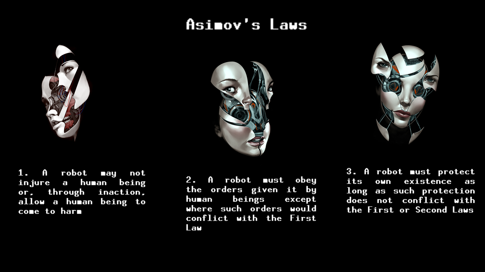

The Three Laws of Robotics:
Overview
The stories are woven together by a framing narrative in which the fictional Dr. Susan Calvin tells each story to a reporter (who serves as the narrator) in the 21st century. Although the stories can be read separately, they share a theme of the interaction of humans, robots, and morality, and when combined they tell a larger story of Asimov's fictional history of robotics. read more ...
Buy Book More infoFor the true collectors
“To you, a robot is a robot. Gears and metal; electricity and positrons.—Mind and iron! Human-made! If necessary, human-destroyed! But you haven’t worked with them, so you don’t know them. They’re a cleaner better breed than we are.”

“Robbie was constructed for only one purpose really—to be the companion of a little child. His entire ‘mentality’ has been created for the purpose. He just can’t help being faithful and loving and kind. He’s a machine—made so. That’s more than you can say for humans.”
"Life is pleasant. Death is peaceful. It's the transition that's troublesome." Isaac Asimov